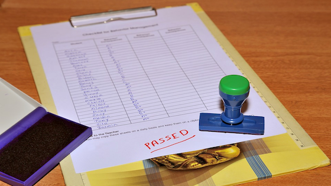

Plantas asombrosas
La revista  National Geographic quiso fotografiar con detalles una sequioa (los árboles más altos del mundo) de 92 m de altura y unos 1 500 años de edad. Pero ninguna cámara conocida tiene esa capacidad. Así que decidieron sacar varias fotografías en diferentes días y montar la imagen. Necesitaron:
National Geographic quiso fotografiar con detalles una sequioa (los árboles más altos del mundo) de 92 m de altura y unos 1 500 años de edad. Pero ninguna cámara conocida tiene esa capacidad. Así que decidieron sacar varias fotografías en diferentes días y montar la imagen. Necesitaron:
- Un grupo de expertos en alpinismo y fotografía
- 21 días de trabajo
- 84 fotografías parciales
- 120 horas de montaje digital
En esta sección de nuestra secuencia didáctica vamos a:
- investigar y dar a conocer curiosidades que podemos encontrar en el fascinante mundo de las plantas en nuestro planeta y,
- realizar un trabajo sobre las plantas endémicas y los árboles singulares extremeños.
Ahora en equipo. Un asombroso mural vegetal
Actividad 1
Vamos a crear un mural colaborativo en el que recopilaremos todas las curiosidades y récords que encontremos sobre las plantas.
Podemos hacerlo digitalmente mediante la herramienta en línea  Padlet o en una cartulina.
Padlet o en una cartulina.
Nos documentamos
El árbol más viejo, la planta de hojas más grandes, el árbol más pequeño, la planta más abundante del mundo, la planta carnivora más grande, la orquídea “cara de mono”, el fruto más dulce... Todas aquellas curiosidades que se nos ocurran.
- Podemos buscar información haciendo uso de Google, para usarlo eficazmente es aconsejable seguir una serie de pautas, que hemos recogido en el documento de apoyo
 "Recomendaciones de búsqueda en Google". Será muy útil consultarlo antes de iniciar nuestras búsquedas.
"Recomendaciones de búsqueda en Google". Será muy útil consultarlo antes de iniciar nuestras búsquedas. - Para buscar imágenes con licencia CC nos será de utilidad leer el documento "Cómo buscar imágenes con licencia CC en Internet".
A modo de ejemplo en el mural podemos:
- Poner una foto y comentar las características de la conífera más gruesa del mundo. Se trata del Ciprés de los Pantano mexicano. ¡Hacen falta 30 adultos cogidos de la mano para rodear su tronco!
- Dar a conocer que para conseguir 1 kilo de azafrán hay que recolectar unas 160 000 flores de la Rosa del Azafrán.
- Poner una foto de la planta que mató al filósofo griego Sócrates y comentarla.
- Poner una imagen de La Grayi Diphylleia, una hermosa flor muy peculiar que se vuelve transparente al contacto con el agua y parece de cristal.
- Añadir al mural un video sobre la planta que “regresa de la muerte” por poder resucitar después de un período de desecación que puede durar varios años.
- Contar que existe una planta, llamada flor del lagarto, que tiene olor a carne podrida.
- Dar a conocer a Pando, el ser vivo más pesado que se conoce actualmente en nuestro planeta (en conjunto pesa unas 6 600 toneladas; 6,6 millones de kilos) cuya vida es de unos 80 000 años.
Creamos un mural
Para aprender a hacerlo recurriremos al tutorial "Nuestro mural colaborativo en Padlet".
"Nuestro mural colaborativo en Padlet".
Exponemos y evaluamos
Revisamos nuestros murales antes de presentarlos, para ello podemos utilizar esta lista y evaluar los puntos más importantes (autoevaluación):
- ¿El título es llamativo y claro?
- ¿Las imágenes o vídeos ayudan a ilustrar la información del mural?
- ¿La cantidad de imágenes y vídeos e adecuada? ¿Hay muy pocos o hay demasiados?
- ¿Los textos están expresados de forma clara y sin errores ortográficos?
- ¿Toda la información es interesante?
- ¿Queda clara la información que deseamos transmitir?
- ¿El formato utilizado invita a leer el mural?
- ¿La organización espacial de los distintos elementos ayuda a la lectura del mural?
Una vez revisado estamos listos para presentarlo al resto de la clase. ¡Adelante!
- Preparamos en equipo un pequeño guion sobre cómo lo presentaremos, qué elementos queremos resaltar y qué nos ha sorprendido más.
- Es momento de compartir los murales con toda la clase. Con ayuda de la pizarra digital presentamos el mural a nuestros compañeros. Escucharemos con atención los comentarios de los otros equipos, y hacemos nosotros también comentarios que ayuden a mejorar los murales de otros equipos. Las críticas nos ayudan a mejorar ¡y a seguir aprendiendo!
- Después de nuestra presentación, repartiremos la plantilla
 "Cuestionario de coevaluación de la exposición oral" para que nuestros compañeros valoren nuestro trabajo. Es conveniente que lo tengamos en cuenta para su realización.
"Cuestionario de coevaluación de la exposición oral" para que nuestros compañeros valoren nuestro trabajo. Es conveniente que lo tengamos en cuenta para su realización. - Para terminar, valoraremos las sugerencias que nos hayan hecho, haremos los cambios que nos parezcan interesantes y, sobre todo, no olvidaremos agradecer a nuestros compañeros su ayuda.
- Nuestro profesor evaluará nuestro muro digital con la rúbrica "Creación de un muro virtual en Padlet".
En el siguientes apartado nos sugieren RECURSOS útiles para realizar la actividad:
Ahora en equipo. Plantas endémicas y árboles singulares extremeños
Actividad 2
Extremadura cuenta con un gran número de especies vegetales endémicas, es decir, que solo se encuentran en un área de distribución geográfica limitada, un ejemplo es la orquídea de Almaraz. Algunas especies, sin ser exclusivas de Extremadura hallan aquí el terreno óptimo para su desarrollo, son los endemismos luso-extremadurenses como el lirio lusitano.
La protección de los endemismos tiene una gran importancia, pues su desaparición de nuestro territorio supondría la extinción total de esas especies. Localizamos en Internet al menos tres endemismos extremeños o luso-extremadurenses y realizamos una ficha que incluya: una imagen, sus principales características y la respuesta a las siguientes cuestiones.
- ¿Tienen algo en común?
- ¿Por qué es importante cuidar las plantas endémicas o autóctonas?
Actividad 3
Cuando un árbol es especialmente interesante por su biología, por su tamaño o longevidad o por los acontecimientos sociales que se han vivido en torno a él se le considera "Árbol singular" o "Árbol notable", un ejemplo es el "Árbol de Guernica" que se encuentra en el País Vasco.
En Extremadura también tenemos árboles notables con nombre propio como "El abuelo", " La Terrona", "Padre santo" y muchos más que vamos a descubrir.
La biodiversidad en Extremadura es fuente de riqueza natural y turística, y patrimonio no solo de los extremeños, sino de toda la humanidad. Por ello, su conservación ha de ser compromiso de todos.
Cada equipo diseñará, en el formato que prefiera, un folleto turístico invitando a conocer la campiña extremeña. En él debe aparecer la descripción, localización y la imagen de tres de nuestros árboles singulares.
Podemos hacerlo:
- manualmente en una cartulina o,
- digitalmente en
 Google Drive cómo una presentación o un póster en Genially.
Google Drive cómo una presentación o un póster en Genially.
Ver presentación a pantalla completa Ver presentación a pantalla completa
Es momento de recordar que todos los equipos debemos finalizar nuestro GLOSARIO que será evaluado por el profesor con  la rúbrica del glosario.
la rúbrica del glosario.
Diario de aprendizaje
- En el Diario de aprendizaje de nuestro portafolio individual haremos una nueva entrada que tendrá por título Plantas asombrosas.
- La escribiremos en nuestro cuaderno de clase o en un documento de Google Drive, utilizando
 la plantilla Cuestionario de autoevaluación.
la plantilla Cuestionario de autoevaluación. - Será evaluado a lo largo del proceso y al finalizar, para lo cual el profesor o profesora utilizará la rúbrica del Diario.

En el siguiente botón tenemos algunas orientaciones para ello.
Evaluación final del funcionamiento del equipo
Hemos llegado al final del proceso y es el momento de que valoremos globalmente la secuencia didáctica. Para ello:
- Hacemos una nueva entrada en el Diario de aprendizaje que titulamos "Reflexión final" en nuestro cuaderno de clase, o en un documento de Google Drive utilizando la plantilla "Cuestionario de autoevaluación final". Recordaremos qué hemos hecho, cómo lo hemos hecho, cómo nos hemos sentido... Si consultamos las anotaciones realizadas en nuestro diario a lo largo de la secuencia, nos resultará más sencillo responder a las cuestiones:
- ¿Qué he aprendido nuevo a lo largo de la secuencia? He aprendido a...
- ¿Cómo he aprendido? He aprendido mejor cuando..., me cuesta menos aprender cuando..., etc.
- ¿Qué actividad(es) me ha resultado más útiles para aprender? ¿Por qué?
- ¿Qué actividad(es) me ha resultado más difícil? ¿Por qué?
- Las herramientas informáticas que más me han gustado son….
- Me ha resultado difícil trabajar la herramienta...
- Mi grado de implicación en las tarea creo que ha sido..
- ¿Cómo me he relacionado? Ayudando a ... me he dado cuenta... Con la ayuda de... he conseguido...
- ¿Cómo me he sentido? Me he sentido bien cuando... pero no con... Lo que más me ha gustado es...
- ¿Trabajar en grupo me ha ayudado a aprender? Sí o no, porque...
- Cumplimentamos el "Cuestionario de autoevaluación del equipo" y lo guardamos en el portafolio de equipo.
Pixabay. Evaluación (CC0) - Nuestro profesor ha valorado nuestro trabajo a lo largo de la secuencia didáctica. Ahora también valorará el funcionamiento del equipo y nuestro diario mediante:
Obra publicada con Licencia Creative Commons Reconocimiento Compartir igual 4.0